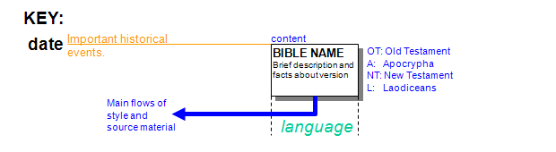
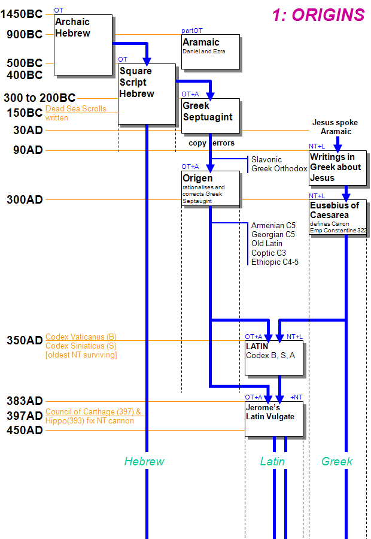
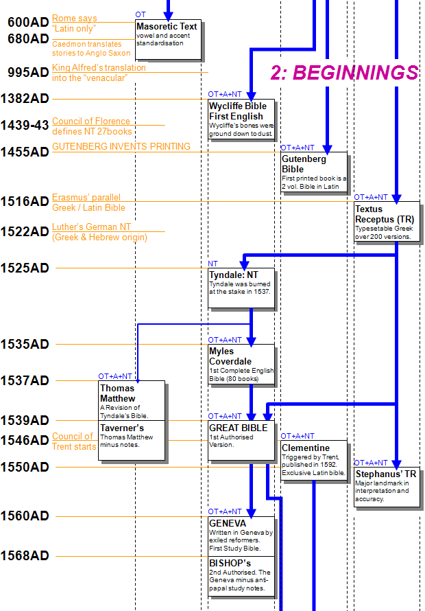
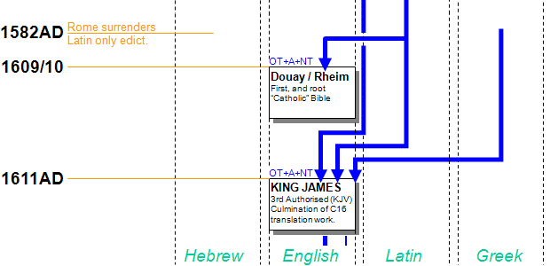
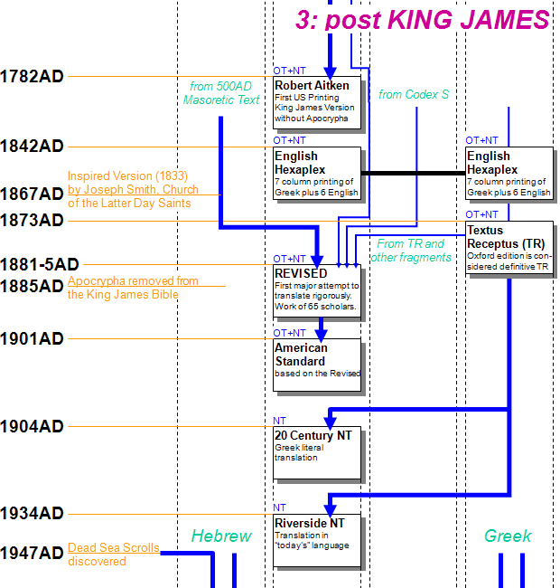

Bible History FLOWCHARTIn 2004 I asked myself the question, Where did the Bible we read today
come from? There were many web pages on this subject, but they either treated
the subject at a superficial or in-depth level. I couldn't find a flowchart,
timeline or chronology,
that tied it all together rather than just being a inventory of
Bibles and when they were published. The rest of this page contains notes on the left, and the flowchart on the
right. With a high resolution monitor you will see both together, or you can use
the scroll bar to flick between them. Alternately use the following table, or the heading
links in the text to open a separate page with the flowcharts so you can read the notes and view the chart at the same time.
|
||||||||||||||||||||||
1: ORIGINS 1450BC - 600ADThe roots of the Bible go back over 3000 years, and we must consider the society and practices in that era.
|
 | |||||||||||||||||||||
|
HEBREW The original manuscripts for the OT. Written between 1450 BC and 400 BC. Written in archaic Hebrew, gradually changed to modern square script Hebrew after 400 BC, and still used to this day. Around 500 AD the Masoretes developed a system of vowel and accents to punctuate the text, they also standardised the text and content, preparing it for printing much later (Psalter 1477, Full OT 1488). The oldest surviving material was the Masoretic from the 9C, until the Dead Sea Scrolls were discovered in 1947 from 2-1C BC Certain portions of the OT (Daniel and Ezra mainly) are written in Aramaic. Aramaic was used from 900BC onwards. Aramaic was used by the common people, while Hebrew remained the language of religion and government and of the upper class. Jesus and the Apostles are believed to have spoken Aramaic, and Aramaic-language translations (Targums) of the Old Testament circulated. Aramaic continued in wide use until about 650AD, when it was supplanted by Arabic. SEPTUAGINT or LXX, from the story that 72 scholars (6 from each of the 12 tribes) working in 12 groups produced 12 identical Greek translations from Hebrew, although analysis shows widely differing Greek styles. As Greek became the daily language of the Jews in Egypt the translation was made. The Torah, or Pentateuch (first 5 books of the OT) in 3C BC and the rest in 2C BC. The Septuagint contains 29 Old Testament and 14 Apocrypha books. The language of much of the early Christian church was Greek, the Jews did not like this "highjacking" of their scripture, so Rabbis met at the city of Jamnia or Javneh in 90 AD to determine which books were truly the Word of God. They pronounced many books, including the Gospels, to be unfit as scriptures. This canon also excluded seven books (Baruch, Sirach, 1 and 2 Maccabees, Tobit, Judith, and the Wisdom of Solomon, plus portions of Esther and Daniel) that Christians considered part of the Old Testament. The Septuagint's subsequent history is in the Christian church. In the 3 C AD Origen attempted to clear up copyists' errors that had crept into the text of the Septuagint, which by then varied widely from copy to copy. Other scholars also consulted the Hebrew text in order to make the Septuagint text more accurate. But it was the Septuagint, not the original Hebrew, that was the main basis for the
as well as the Slavonic (numerous translations over the centuries starting 1 C AD.) and part of the Arabic translations of the Old Testament. The Septuagint has always been the standard version of the OT in the Greek church, and from it Jerome began his translation of the Vulgate OT. Earliest surviving versions of the Septuagint (& therefore the NT) are Codex Vaticanus (B) and the Codex Sinaiticus (S), both from the 4th C AD, and the Codex Alexandrinus (A) from the 5 C AD. Fragments of Acts, Revelation, John and Luke from as early as 3 C AD also exist in various documents. VULGATE This most famous Latin translation was by St Jerome, sponsored by Pope Damasus, with it's first edition in 383 AD. It was initially from the Septuagint Greek version of the Old Testament, but the revised version of 405 AD used Hebrew (Jerome felt the Greek was inadequate so re-translated it) for the OT, New Latin translations of the Psalms (the so-called Gallican Psalter), and thehe NT was compiled mainly from already existing Latin versions. The 80 book bible (39OT, 14A, 27NT) was revised and corrected over the years, the first printed versions were the much respected University of Paris edition from the 13C. In 1546 the Council of Trent decreed that the Vulgate was the exclusive Latin authority for the Bible. It required its printing with as few errors as possible, resulting in the so-called (Pope) Clementine (VIII) Vulgate of 1592, with 80 Books. It became the authoritative text of the Roman Catholic Church. From it the Confraternity Version was translated in 1941 and in 1965 the revised edition authorised by the 2nd Vatican Council. |
 | |||||||||||||||||||||
2: BEGINNINGS 600AD - 1611ADTEXTUS RECEPTUS (Received Text) Due to the original Greek having hundreds of custom symbols, even with the advent of printing around 1450 AD it took until 1516 AD for the Greek to be widely available, in a special reduced Greek character set. Printer John Froben of Basle (who stole a march on Cardinal Ximenes) engaged Desiderius Erasmus who produced a dual Greek/Latin version. The edition was full of errors, and not traceable to particular Greek originals. It was an instant success, reprinted with corrections several times, and led to nearly 200 successors, all suffering from errors to a certain degree between 1516 and 1550. The damage was done, the world was flooded with erroneous Greek text. 1550 AD saw the publication of Robert Stephanus's TR, whose third edition became the standard text, as it started to introduce rigour sadly lacking in previous work. He is credited with devising the chapter and verse delineations used to this day. 1633 AD saw further refinement by Elzevir, and the "final" major edition is the 1873 Oxford edition. The Textus Receptus is thus very far from it's Latin name, received text, it is a vast range of the Greek, of variable quality. Whilst making the Greek available to a wide range of scholars through printing, it also introduced many errors to this audience. AND SO TO ENGLISH... By 600 AD Latin was the only Language allowed for Scripture by the Rome authorities. However for the next 700 years there were numerous limited translations, of which Caedmon's rendering of Bible stories into Anglo Saxon in 680 AD, and King Alfred had parts of bible translated into the vernacular in 995 AD are worthy of a mention. In 1382 AD (updated 1400 AD)
Wycliffe produced the first true English Bible, containing all 80 books, each
copy was handwritten.
Some copies survived of his work which was based on the Vulgate, its major weakness.
The next major Bible, and world, event was 40 years later. In 1455 AD Gutenberg invented the Printing Press, and the first book was his 2 volume Latin Bible. In 1516 Erasmus produced a parallel Greek / Latin Bible which was one of the first scholarly tools, and may have helped Martin Luther produce the first German NT, from The Greek (& Hebrew) in 1522. This was the basis of Danish & Swedish translations. In 1525-35 Tyndale produced his English NT, the first printed English Bible, based mainly on the Greek. It did not have the shortcomings of Wycliffe, and was a landmark in method and style. Tyndale was hunted by the establishment, and burned at the stake in 1537, although not before the Myles Coverdale's Bible; the first complete printed Bible - published in 1535. Now, within a very short time, because of the political circumstances in England, and the reformation on the continent, we move towards acceptance. 1537 saw the Thomas Matthew, a revision of Tyndale by John Rogers (80 Books), and 1539 saw the Taverners, a revision of Matthew minus most of the notes. But 1539 is a landmark as it saw the publishing of the Great Bible, or First Authorised Version. With all 80 books it is often called the Cranmer after that archbishops preface to the 2nd edition. Work now gathered pace, as did the heat generated by the reformation. The Geneva Bible (1560) was a revision of The Great. It was the first Study Bible, with hardly flattering comments about the Catholic Church. It was written by reformers in exile in Geneva, and was supported by Calvin & Knox. It was a full 80 Book Bible, based on the Tyndale Bible, and remained popular for 100 years after the King James Version, especially with Puritans in the United States. It was also notable as the first Bible to have printed verse numbers. |
 | |||||||||||||||||||||
|
In 1568 the Bishop's Bible became the 2nd Authorised Bible, intended to supersede the Great & Geneva. 80 Books, translated by scholarly bishops. In 1582 Rome surrendered it's "Latin only" edict, and the preamble to the greatest Bible of them all draws to a close. In 1609-10 the Douay/Rheimes Bible was published, the first Catholic English translation (80 Books), translated from the Vulgate (a disadvantage) it became the seed bible for nearly all Catholic Bibles. However this important event was overshadowed the following year. In 1611 the King put his name to the King James, the 3rd Authorised Version. Used by many to this day, and loathed by some as clinging onto the past. The work was a masterpiece, the culmination of the 16th century work. It took the best of what had gone before in style, prose, chapter & verse division, and translation accuracy. Written to be read out-loud in public worship, a literary and spiritual giant leap, which for it's day was breathtaking. It was based on the Great Bible and on various TRs with Vulgate influence. It reigned supreme until 1881. Some early printings are famous for a typographical error in Ruth 3:15. They became known as the He bibles, rather than the correct She bibles, and command a very high price today. |
 | |||||||||||||||||||||
3: post KING JAMES 1611AD - 1947ADThe King James Bible set a standard which was not surpassed during the 17th century. The fact there was little new activity during the rest of the century, surely speaks volumes for the quality of the work of the KJV. New Testament editions in the 18th century did not question the Textus Receptus (TR), despite new manuscript evidence and study, but its limitations became apparent. E. Wells, a British mathematician and theological writer (1719), was the first to edit a complete New Testament that abandoned the TR in favour of more ancient manuscripts; and English scholar Richard Bentley (1720) also tried to go back to early manuscripts to restore an ancient text, but their work was ignored. In 1734 J.A. Bengel, a German Lutheran biblical theologian, stressed the idea that not only manuscripts but also families of manuscript traditions must be differentiated, and he initiated the formulation of criteria for text criticism. In 1782 Robert Aitken's Bible became the First English Language Bible (KJV without Apocrypha) to be printed in America. In 1833 Joseph Smith received his "Inspired Version" from God. It was published in 1867 after his death in 1866, and is considered divine by the Church of Jesus Christ of the Latter Day Saints. In 1841 the English Hexapla New Testament was published. An Early Textual Comparison showing the Greek and 6 Famous English Translations in Parallel Columns, it demonstrated the need for study material for bible translators and scholars. The next major works took place between 1881-5, the Revised Version. Based on the KJV, it was a literal translation of Hebrew & Greek by 65 English scholars. Full 80 Book, based on Masoretic 500 AD material. This became the modern bible of the 19th century against the King James version from the 17th. It was also notable for its modern approach to translation rigour, and the team approach to the work. The story of the Apocrypha (or inter-testament works) is not covered here, however it was officially removed in 1885 leaving the 66 books generally accepted as the Word of God today. In 1901 the American Standard was published, an American version on the Revised / KJV line, and in 1952 the Revised Standard Version, authorised by the NCC in the USA. Whilst it has many good points, based on strong Greek originals, it is weak in its translation of key OT messianic passages. |
 | |||||||||||||||||||||
4: post DEAD SEA SCROLLS 1947AD - 1982ADWith the discovery of the Dead Sea Scrolls (1947), making much 1 C BC material available to highly skilled and organised translators the last part of our journey changes to one where translations are all of very high quality, but have many styles and interpretations. Each translation choosing a different balance between literal translation and creative interpretation. This trend had
started earlier in the 20th century with 1934's Riverside NT, written
in today's language.
Since 1982 more translations have been published, most following the 20th century trend of making accurate translations available to enable the Word of God to evangelise people where they are. That's another story, and our history ends here.
| ||||||||||||||||||||||